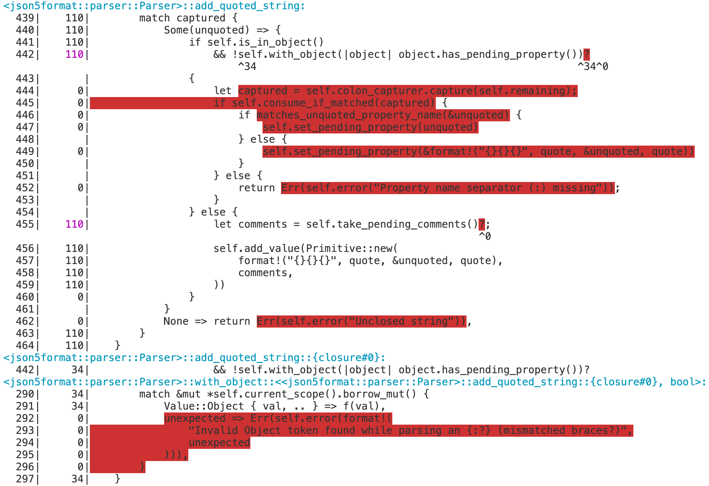

پوشش کد مبتنی بر منبع LLVM
rustc از تحلیل دقیق پوشش کد و آزمون مبتنی بر منبع (source-based) پشتیبانی میکند
که با یک گزینهٔ خط فرمان (-C instrument-coverage) فعال میشود و در زمان کامپایل، کتابخانهها و فایلهای دودویی Rust
را با دستورها و دادههای اضافی ابزارنگاری (instrument) میکند.
ابزارنگاری پوشش، فراخوانیهایی به دستور ذاتی (intrinsic) LLVM با نام
llvm.instrprof.increment را در شاخههای کد تزریق میکند
(بر اساس یک تحلیل جریان کنترل مبتنی بر MIR)، و LLVM اینها را به
دستورهایی تبدیل میکند که هنگام اجرا شمارندههای ایستا را افزایش میدهند.
ابزارنگاری پوشش LLVM همچنین به یک نقشهٔ پوشش (Coverage Map) نیاز دارد که فرادادههای منبع را کدگذاری میکند
و شناسههای شمارنده را – مستقیم و غیرمستقیم – به مکانهای فایل (با
خط و ستون آغاز و پایان) نگاشت میکند.
کتابخانههای Rust، با یا بدون ابزارنگاری پوشش، میتوانند به فایلهای دودویی ابزارنگاریشده لینک شوند.
وقتی برنامه اجرا میشود و بهصورت تمیز پایان مییابد،
کتابخانههای LLVM مقادیر نهایی شمارندهها را در یک فایل مینویسند (default.profraw یا
فایلی سفارشی که با متغیر محیطی LLVM_PROFILE_FILE تعیین میشود).
توسعهدهندگان از ابزارهای موجود تحلیل پوشش LLVM برای رمزگشایی فایلهای .profraw
همراه با نقشههای پوشش متناظر (از فایلهای دودویی منطبقی که آنها را
تولید کردهاند) استفاده میکنند و گزارشهای گوناگونی برای تحلیل میسازند، برای مثال:

دستورالعملها و نمونههای دقیق در کتاب rustc مستند شدهاند.
تنظیمات پیشنهادی bootstrap.toml
هنگام کار روی کد ابزارنگاری پوشش، معمولاً لازم است
زمان اجرای profiler را فعال کنید؛ این کار با تنظیم profiler = true در [build] انجام میشود.
این تنظیم به کامپایلر اجازه میدهد فایلهای دودویی ابزارنگاریشده تولید کند و امکان
اجرای مجموعه آزمون کامل پوشش را فراهم میکند.
فعال کردن debug assertionها در کامپایلر و در LLVM توصیه میشود، اما اجباری نیست.
# Similar to the "compiler" profile, but also enables debug assertions in LLVM.
# These assertions can detect malformed coverage mappings in some cases.
profile = "codegen"
# IMPORTANT: This tells the build system to build the LLVM profiler runtime.
# Without it, the compiler can't produce coverage-instrumented binaries,
# and many of the coverage tests will be skipped.
build.profiler = true
# Enable debug assertions in the compiler.
rust.debug-assertions = true
name mangling نمادهای Rust
-C instrument-coverage بهطور خودکار name mangling نسخهٔ v0 در Rust را فعال میکند
(گویی کاربر گزینهٔ -C symbol-mangling-version=v0 را هنگام فراخوانی
rustc داده است) تا name mangling یکنواخت و برگشتپذیر تضمین شود.
این کار دو مزیت مهم دارد:
- ابزارهای پوشش LLVM میتوانند پوشش را در چندین اجرا تحلیل کنند، حتی با برخی تغییرات در کد منبع؛ بنابراین نامهای mangleشده باید در کامپایلهای مختلف یکسان باشند.
- گزارشهای پوشش LLVM میتوانند پوشش را به تفکیک تابع گزارش کنند و حتی شمارش پوشش هر نمونهسازی یکتای یک تابع جنریک را جدا میکنند، اگر با جایگزینیهای نوعی گوناگون فراخوانی شده باشد.
زمان اجرای profiler در LLVM
دادههای پوشش فقط با اجرای برنامهٔ Rust اجرایی تولید میشوند.
rustc فایلهای دودویی ابزارنگاریشدهٔ پوشش را بهصورت ایستا با کد زمان اجرای LLVM
(compiler-rt) لینک میکند که قلابهای برنامه
(مانند قلاب exit) را برای نوشتن مقادیر شمارنده در فایل .profraw پیادهسازی میکند.
در درخت سورس rustc،
library/profiler_builtins کد compiler-rt مربوط به LLVM را در یک crate کتابخانهای Rust بستهبندی میکند.
توجه کنید که هنگام ساخت rustc،
profiler_builtins فقط وقتی گنجانده میشود که build.profiler = true در bootstrap.toml تنظیم شده باشد.
هنگام کامپایل با -C instrument-coverage،
CStore::postprocess() profiler_builtins را بهصورت پویا و با فراخوانی
inject_profiler_runtime() بارگذاری میکند.
آزمودن ابزارنگاری پوشش
(مستندات compiletest را هم برای مجموعه آزمون tests/coverage
ببینید.)
ابزارنگاری پوشش در MIR با یک آزمون mir-opt اعتبارسنجی میشود:
tests/mir-opt/coverage/instrument_coverage.rs.
ابزارنگاری پوشش در LLVM IR توسط مجموعه آزمون tests/coverage
در حالت coverage-map اعتبارسنجی میشود.
این آزمونها یک برنامهٔ آزمایشی را به اسمبلی LLVM IR کامپایل میکنند و سپس
از ابزار src/tools/coverage-dump برای استخراج و چاپ خوانا
نقشههای پوششی که در فایل دودویی نهایی جاسازی میشدند استفاده میکنند.
آزمون سرتاسری (end-to-end) ابزارنگاری پوشش و گزارشدهی پوشش
توسط مجموعه آزمون tests/coverage در حالت coverage-run،
و توسط مجموعه آزمون tests/coverage-run-rustdoc انجام میشود.
این آزمونها یک برنامهٔ آزمایشی را با ابزارنگاری پوشش کامپایل و اجرا میکنند، سپس از ابزارهای LLVM برای تبدیل دادههای پوشش به
یک گزارش پوشش قابلخواندن برای انسان استفاده میکنند.
آزمونهای حالت
coverage-runیک دستورالعمل ضمنی//@ needs-profiler-runtimeدارند، بنابراین اگر زمان اجرای profiler درbootstrap.tomlفعال نشده باشد نادیده گرفته میشوند.
در نهایت، آزمون tests/codegen-llvm/instrument-coverage/testprog.rs یک برنامهٔ ساده Rust را
با -C instrument-coverage کامپایل میکند و LLVM IR برنامهٔ کامپایلشده را با
دستورهای LLVM IR و دادههای ساختاریافتهٔ مورد انتظار برای یک برنامهٔ دارای پوشش مقایسه میکند،
شامل بررسیهای گوناگون برای فرادادههای مرتبط با نقشهٔ پوشش و فراخوانیهای intrinsic LLVM
برای افزایش شمارندههای زمان اجرا.
نتایج مورد انتظار آزمونهای coverage، coverage-run-rustdoc
و mir-opt را میتوان با اجرای دستورهای زیر بهروز کرد:
./x test coverage --bless
./x test coverage-run-rustdoc --bless
./x test tests/mir-opt --bless